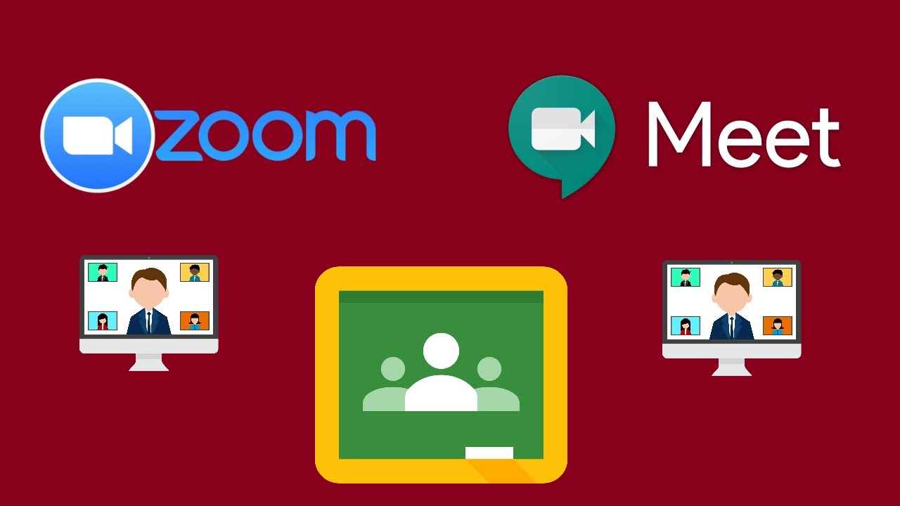

Debido al alto desarrollo tecnológico que hay en el mundo en estos momentos, es posible hacer muchas cosas que antes no se podían de manera virtual, tal es el caso de ahora las clases en línea.
La educación es uno de los factores más afectados por la actual pandemia, haciendo que se tomen decisiones que no se hubieran pensado antes, como dar clases en línea, en anteriores epidemias, lo que pasaba con la educación de los jóvenes, en los mejores casos era intentar aprender desde casa, en los peores, era perder el tiempo de aprendizaje por no poder salir de la casa por miedo del contagio o por órdenes del gobierno, ahora todo tiene más opciones y en algunos casos más sencillas que a las que estamos acostumbrados.